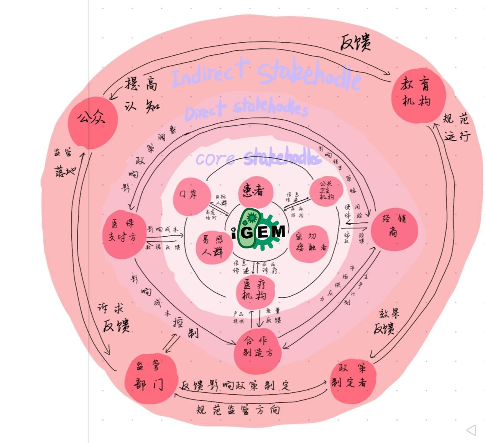
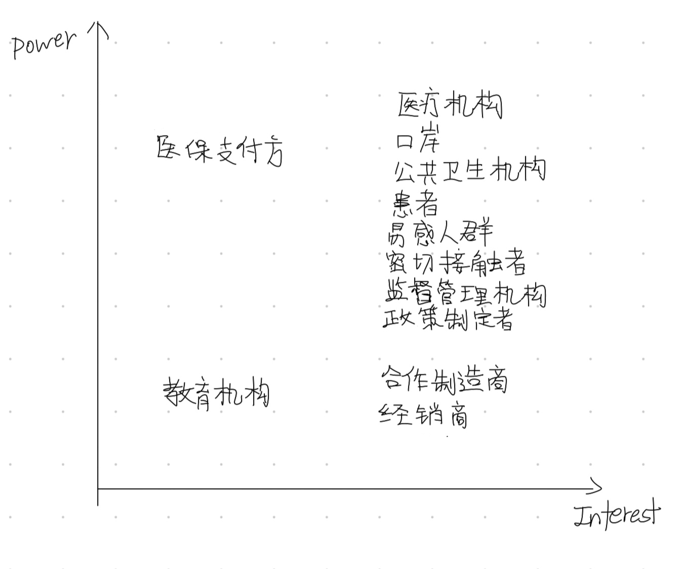

Human Practice
JLU-SPH iGEM 2026 | 呼吸道病原体快速检测平台
本项目选题直面全球化下呼吸道病原体快速传播的挑战，关注并解决全球公共卫生需求[10][23]，基于对养老院、幼儿园等基层场景及口岸检疫中对快速、精准检测技术的迫切需求，通过合成生物学技术实现病原体的早期发现与分型，研发一款核酸即时检测平台。真正做到单次多检、单次快检、人人能检，构建从社区到国门的传染病早期预警网络[6]，筑牢公共卫生安全防线，为国际公共卫生安全的进步贡献力量。
第一部分：选题来源：响应国际公共卫生需求——新发突发传染病现场快速检测的重大挑战
我们的故事，始于一次深入养老院的倾听。院长向我们分享了他的无奈与期盼：一位老人的普通感冒，若不能及时明确病因，很可能在一周内演变为整个楼层的呼吸道感染。由于缺乏快速甄别病原体的能力，工作人员往往只能采取“一刀切”的封闭管理。这种措施虽是出于安全考量，却在无形中给老人们的身心带来了额外的负担——他们渴望交流与活动，却因防控的不确定性而倍感束缚。同样，在充满欢声笑语的幼儿园，一位保健医也道出了她的烦恼：孩子们往往无法清晰表达自己的不适，一旦有孩子出现发热症状，园方为了稳妥起见，常常需要通知全班家长接回孩子观察。这不仅打乱了众多家庭的正常节奏，也容易引发不必要的恐慌。她们由衷地希望，如果能有一种方法，能像用体温计量体温一样简单、快速地区分普通流感与更具传染性的病毒，那么防控措施就能像一把精准的手术刀，既有效阻断疫情，又最大限度地减少对正常生活的干扰。
这些来自社会最柔软角落的呼声，深深地触动了我们。我们意识到，守护他们的健康，不仅需要无微不至的爱心与耐心，在当今这个人员流动频繁的时代，更急需一种普惠、快捷、精准的现场健康“哨兵”。既让养老院的护工阿姨或幼儿园的老师经过简单培训就能熟练操作；也要能迅速采取科学的应对措施。这份沉甸甸的社会需求，正是我们项目最原始的出发点和始终如一的落脚点。
将目光从温暖的室内投向广阔的世界，我们看到全球化在带来发展与便利的同时，也为呼吸道传染病的传播提供了条件。新发突发的病原体可能在全世界快速传播，对全球公共卫生安全构成持续挑战。在这种背景下，养老院或幼儿园里的一次快速、精准的筛查，其意义远不止于保护当下群体。它更是防止疫情在社区悄然蔓延的第一道关口。而当我们将场景切换至国门口岸，一次高效的通关健康筛查，则直接关系到国家公共卫生安全的屏障是否牢固。
因此，基层社区的精准防控与国家层面的边境安全，通过“快速检测”这一共性需求，紧密地联系在了一起。这促使我们思考，能否研发一种技术平台，既能满足养老院、幼儿园对操作简便和速度的极致要求，又能适应口岸等高通量、严标准的场景，从而编织一张从社区到国门的传染病早期预警网络？这个宏大的愿景，赋予了我们的项目超越技术本身的社会价值与时代使命。
为了更扎实地确认这些需求的真实性与紧迫性，我们团队走进了社区，与居民们深入交流；我们也拜访了多位公共卫生领域的专家学者。我们还拜访了吉林大学公共卫生学院院长李娟，就口岸及社区传染病监测的现状与需求进行深入交流。
“你们所关注的正是目前亟待解决的口岸公共卫生前沿课题。作为国门的第一道防线，传染病检测技术的局限确实是核心问题之一，在突发疫情面前，时间就是生命，效率就是安全。当前口岸和基层检测能力面临的最大瓶颈，在于如何将实验室的‘金标准’在保证准确性的前提下，极大地压缩时间、简化流程，并部署到一线。如果能够实现30分钟内完成‘样本入，结果出’，这项技术将具有重大的应用价值。”
这番对话不仅印证了我们选题的现实意义，更赋予了项目团队强烈的使命感和紧迫感。这一观点也得到了 New England Journal of Medicine 及其关于高频低灵敏度与低频高灵敏度检测策略辩论的强力支撑[17]。
因此，我们项目的核心目标非常明确：我们要致力于打造一个真正“有效且便携”、同时确保“绝对安全”的健康检测解决方案。我们清醒地认识到，这不仅仅是一项技术创新，更是一种公共卫生服务模式的探索。它旨在将健康守护的关口前移，从被动应对转向主动预警，让科技的力量化作一份温暖的保障，无声地融入老人和孩子们的日常生活，让关心他们的人更安心。
我们的首要设计原则是“用户至上”。我们不断地在脑海中模拟操作设备的场景，如何让养老院的人们能操作便携，如何让幼儿园的孩子们积极配合......所有这些思考，都转化为我们对产品形态、交互界面和操作流程的具体要求。我们期望，最终问世的产品，能让使用它的人感受到的是便利与关怀，而非冰冷的技术负担。
在技术路径的选择上，我们致力于寻找一种巧妙的平衡术：它必须在准确、快速和简便之间找到黄金平衡点。受 Nature Biomedical Engineering 等前沿研究启发[20]，我们设想能否模仿生命体识别特定目标并产生放大信号的过程，来侦测病原体的踪迹。让检测平台具有独特的“嗅觉”，能敏锐地从样本中识别出“目标”，将这种识别信号放大到足以被轻松读取。整个过程，我们力求使其能够在常温下稳定工作，摆脱对大型精密仪器和持续能源供应的依赖，使其能够轻松部署在养老院的活动室、幼儿园的保健室，或者口岸的临时采样点。
更进一步，我们怀着一个更宏大的愿景：希望这个平台具备“智慧”。它不仅能够完成单一的检测任务，更能对结果进行初步的分析和判断。同时，检测数据在严格保护个人隐私的前提下，可以加密上传至区域卫生监测系统，为公共卫生部门提供实时、准确的疫情动态数据，实现从个体健康守护到群体疫情预警的无缝衔接。
我们的项目想法，由此聚焦于合成生物学的核心魅力——像工程师一样重新设计和编程生命系统：能否将CRISPR-Cas12a的精准识别机制[1][16]，与高效的RPA技术相结合，构建一个高度集成、自动化的生物分子检测电路？再辅以微流控芯片作为“微型工厂”的流水线[19]，和人工智能作为“质检员”[9][21]，我们能否打造出一款真正意义上的便携式智能检测平台？
这不仅是技术的革新，更是公共卫生思维模式的转变：从中心化的、复杂的监测，转向分布式、前瞻性的哨点监测。
第二部分：项目初步设计与多方专家论证——从“技术可行”到“场景适用”
在明确了核心问题后，我们初步设计了技术方案：利用如今的检测技术与编写的机器设备做出一个智能检测平台，借助手机App与AI模型进行结果判读。然而，我们深知，一个负责任的科学项目，其严谨性必须贯穿于从目标设定、过程检测到最终执行的每一个环节。为此，我们开启了一系列并行的、跨学科的专家咨询与前期准备工作。
2.1 临床需求精准锚定：与一线医务工作者的对话
在项目启动之初，为了确保我们的研究方向能精准锚定公共卫生防控体系的重大需求与一线实战中的真实痛点，我们采取了双线并行的调研策略：首先，从宏观层面与国家顶尖公共卫生专家对话，把握战略方向；其次，深入临床一线，倾听直接用户的声音，确保设计细节贴合实际。
2.1.1 与疾控专家的战略对话：确立项目的战略价值与应用范式
我们非常荣幸地拜访了北京市疾病预防控制中心传染病所副所长XXX。作为长期奋战在新发突发传染病防控前沿的专家，他从国家公共卫生安全的高度，为我们揭示了现场快速检测技术的核心价值与关键挑战。
“在全球人流物流高速流动的背景下，口岸等关键节点已成为疫情防控的最前沿和脆弱点。新型冠状病毒、流感病毒等呼吸道病原体不仅变异快，而且易引发跨区域传播，对现有‘样本送检-实验室检测-结果返回’的模式构成了严峻挑战。将实验室的‘金标准’检测能力前移到口岸、社区等现场，实现‘早发现、早诊断、早隔离’，是筑牢公共卫生防线的必然要求，也是国家重大战略需求。”
他进一步精准指出了理想现场检测设备必须满足的几个核心特征，这为我们项目的设计定下了“刚性指标”：
“时效性就是生命线，在口岸，几分钟的延误可能就意味着传播链的建立。理想的检测必须在30分钟内完成‘样本入、结果出’，为快速管控争取黄金窗口。除此之外，多重检测是刚需，单一病原体的检测在现实中意义有限。临床上症状相似但病原体不同，防控策略差异巨大。设备必须能够同时鉴别流感、新冠、RSV等常见病原体，才能实现真正的精准防控和有效分流。数据必须能说话，检测设备不能是信息孤岛。其结果数据应能便捷、安全地接入现有的传染病监测网络，为实时预警、流行趋势分析和防控决策提供数据支撑，这样才能将个体检测转化为公共卫生产品。”
这次对话为我们注入了强大的信心和清晰的使命感。副所长XXX的观点从国家防控战略层面印证了我们选题的紧迫性与正确性，并为我们勾勒出了项目最终需要达成的战略图景：不仅是一个便携设备，更应是一个融入智慧公卫体系的动态感知节点。
2.1.2 与一线医务工作者的实践对话：将战略需求转化为用户中心的设计语言
带着从宏观层面获得的战略指引，我们深入临床应用场景，拜访了一位三甲医院检验科专家——王主任。他常年处理各类检测样本，对现有检测方案的优劣有着最深刻的理解。这次对话将宏观战略转化为了具体、可执行的设计要求。
“在临床上，病毒载量波动极大。流感爆发期，一个喷嚏里的病毒载量可能上亿，但对于潜伏期或恢复期的 RSV 患者，尤其是采样不标准的儿童，病毒载量可能低至每毫升几百个拷贝。你们现有的单级 CRISPR 信号虽然特异，但在没有 PCR 几亿倍扩增的加持下，拿什么去捕捉这些微弱的信号？”
他的观点让我们将目标转向合适的扩增技术，多种方法要有机结合。于此同时，我们与吉林大学附属医院感染科、检验科的医生及护士进行了座谈。他们从实际工作角度给出了极其宝贵的反馈，这些反馈完美呼应并细化了公共卫生专家提出的要求。
“现场检测设备必须是‘傻瓜式’操作，步骤尽可能少，结果判读要直观（比如红绿灯式显示）。同时，能够一次性检测多种病原体，对于鉴别诊断和精准防控意义重大。设备必须坚固、便携，电池续航要长，并能适应不同的环境温度。”
这些来自最前沿的“用户声音”，使我们的设计重点更加清晰：将“级联放大”“用户友好性”、“多重检测能力”和“环境鲁棒性”作为核心设计指标，直接影响了我们后续在微流控芯片设计上追求“一体化”、在App界面设计上追求“极简直观”、在设备功耗与结构上追求“坚固耐用”的方向。
这次访谈堪称我们项目的“临床需求说明书”。它不仅验证了我们方向的正确性，更重要的是，它为我们的检测系统提出了明确的设计标准：必须实现“快速开启”和“准时关闭”。这让我们在后续选择调控系统时，将“瞬时响应性”和“无延迟”作为了首要考量指标，为我们最终选择光控系统埋下了伏笔。
2.2 技术路径深度论证：与分子检测专家的对话
在项目初期，我们明确CRISPR-Cas12a技术将作为检测系统的核心识别模块，因其具有高特异性、高灵敏度和常温反应等优势[1]。然而，一个关键问题摆在面前：选择何种核酸扩增技术为CRISPR系统提供足够的检测靶标？
我们首先考虑的是最成熟、最经典的PCR（聚合酶链式反应） 技术。作为分子诊断的"金标准"，PCR具有无可比拟的优势：技术成熟、灵敏度极高、特异性良好。我们甚至已经设计了针对五种呼吸道病毒的特异性引物，并开始在实验室条件下进行验证。然而，随着对项目应用场景（口岸现场快速检测）的深入思考，我们逐渐意识到PCR技术存在的一些根本性障碍：PCR需要精确的温度循环（变性-退火-延伸），这意味着必须依赖笨重、昂贵的热循环仪，与便携化设计理念完全相悖；完成一个标准的PCR流程通常需要1.5-2小时，这还不包括核酸提取时间，无法满足口岸"快速通关"的时间要求；持续的温度变化对设备电源要求高，难以在野外或无稳定电源环境下使用。
正当我们为这些瓶颈困扰时，我们意识到必须寻求专业指导，于是拜访了检测专家x chris le。李教授在听取我们的技术方案后，直接指出了问题的核心：
“你们陷入了'实验室思维'。用PCR配合CRISPR，在实验室里做科研是可行的，但你们的目标是开发口岸现场使用的便携设备，这完全是不同的技术选型逻辑。你们应该认真考虑RPA（重组酶聚合酶扩增） 技术。”
在x chris le教授的建议下，我们查阅了大量文献和相关知识，了解RPA相对于PCR的技术优势，这些分析彻底改变了我们的技术路线，决定用RPA与CRISPR相结合的技术。
RPA最大的优势在于恒温反应（37-42°C）[12]，无需热循环仪。这意味着我们可以将整个反应体系集成到一个小小的芯片或试剂盒中，极大简化设备结构，真正实现便携化。同时，RPA反应迅速，满足现场需求。通常在15-20分钟内即可完成扩增，比PCR快2-3倍。通过查阅 Nature Biotechnology 的相关文献，我们确认了利用 RPA 结合 CRISPR-Cas12a 实现检测的可行性[2]结合CRISPR检测，完全可以在30分钟内完成'样本入-结果出'的全流程，这正符合我们的口岸应用场景。其次，RPA的耐受性强，适应现场条件；与PCR相比，RPA对抑制物的敏感性较低，对唾液这类复杂样本的适应性更好[14]，可以减少前处理步骤，简化操作流程。
当我们再次向x chris le教授展示优化后的方案时，她评价道：“这个技术选型的转变，体现了你们从实验室思维到产品思维的成长。正确的技术不一定是最先进的，而是最适合应用场景的。”
2.3 攻克污染风险：如何达到我们的理想结果？
2.3.1 RPA与CRISPR的结合
在项目初期，我们团队设计了一个初步的RPA-CRISPR检测体系，希望实现快速核酸检测。但初步测试中发现，尽管检测速度较快，灵敏度和特异度却不够理想：RPA扩增有时会出现非特异性信号，而CRISPR系统的识别效率也受限于引物设计。为了解决这个问题，我们带着实验数据请教了项目顾问李教授。李教授建议我们采用生物信息学工具重新优化RPA引物，确保扩增产物包含CRISPR-gRNA的最佳识别序列[22]，同时避免二级结构形成，以提升检测效率。
基于这一建议，我们重新设计了引物，并通过多轮实验优化了反应条件，最终建立了一个稳定的“一管法”反应体系[7][11]。该体系在同一温度下先进行RPA扩增，随后直接激活CRISPR检测，无需开盖操作。针对唾液样本，我们优化了核酸释放方法，结合RPA的技术特点，将样本前处理时间缩短至5分钟以内，进一步提升了整体检测速度。
经过优化后的RPA-CRISPR系统表现出显著优势；极低的检测时间，从样本处理到结果输出仅需25-30分钟。超高检测灵敏度，达到200 copies/mL，满足临床检测需求。简化便携的设备，仅需一个小型恒温装置，极大降低了设备复杂度和成本；全民适用的操作，真正实现了"一键式"操作，适合口岸现场使用。
这一技术选型过程为整个项目奠定了坚实基础，也让我们深刻认识到：负责任的创新，不仅在于技术的先进性，更在于技术方案与现实需求的精准匹配。
2.3.2 创新性一管化设计
在验证RPA-CRISPR体系时，我们意识到扩增产物的“气溶胶污染”风险可能影响现场检测的可靠性。最初，我们尝试了常规的开盖操作，但交叉污染问题频发。于是，我们再次向团队专家请教，寻求解决方案。在专家启发下，参考 Nature Communications 中的 "All-in-One" 设计思路[3]我们创新性地采用了“闭管检测”设计：将CRISPR报告分子预先包被在反应管盖内侧的独立微囊中。当RPA反应结束，通过设备内置的机械装置按压管盖，挤破微囊，使报告分子与管内体系混合，全程无开盖操作。经过多次测试，这一设计成功将污染风险降至最低，同时保持了检测的便捷性。
2.4 多重检测挑战与列阵式解决方案
在扩展检测范围至五种病毒时，我们遇到了新的阻力。初步设计中，我们尝试将多组RPA引物和CRISPR gRNA混合使用，但实验结果不理想：引物间交互严重，信号串扰导致检测准确性下降。面对这一棘手问题，我们带着初步实验数据和样品，请教了吉林大学公共卫生学院的xx教授。教授在分析数据后指出，多重检测需要更精细的空间分隔策略。在专家建议并查阅Nature 上关于大规模多重核酸检测的研究后[5]，我们采用了“多重RPA扩增+阵列式CRISPR检测”的新方案：首先设计高度特异且互不干扰的RPA引物组，进行同步多重扩增；随后，将扩增产物分流至微流控芯片上的五个独立检测小室，每个小室预置特定病毒的gRNA，通过空间分隔实现信号区分。我们重新构建了实验体系，并进行了 rigorous 测试，结果证明该策略有效避免了串扰，确保了多靶标检测的并行性与准确性。
2.5 工程化实现挑战：与微流控及设备工程专家的深度对话与突破
在项目推进到工程化阶段时，我们团队面临了一个看似简单却极其复杂的挑战：如何将实验室中成熟的RPA-CRISPR生物化学反应微缩到一块便携式芯片上，并实现稳定、可靠的现场检测？起初，我们信心满满，认为只要将反应体系缩小到微升级别，再集成到芯片中即可。然而，现实很快给了我们当头一棒。当我们尝试设计第一版微流控芯片时，问题接踵而至：多通道检测中样品交叉污染严重、试剂在芯片内流动不稳定、冻干保存的试剂复溶后活性大幅下降，以及光学检测模块在便携设备中受环境光干扰极大。这些工程化难题不仅影响了检测的准确性，更威胁到整个设备的实用性和可靠性。我们意识到，单凭生物学背景的我们，难以独立解决这些跨学科的工程问题，必须寻求专业指导。
在我们对微流控设计一筹莫展时，项目负责人建议我们咨询微流控技术领域的专家。于是，我们联系了浙江大学的牟颖教授，她在微流控设备开发和微型化系统集成方面有十余年的经验。牟颖教授在听取我们的初步设计后，并没有直接否定我们的方案，而是先肯定了我们将生物检测便携化的创新思路，然后一针见血地指出了核心问题：
“你们的设计思路还停留在实验室阶段，忽略了现场应用的现实约束。微流控芯片不是简单地将试管反应缩小，而是需要从流体力学、材料科学和电子工程等多角度重新设计。”
牟颖教授进一步详细分析了我们的挑战：“首先，多通道微流控设计必须避免交叉污染。你们现在采用的并行流道设计，虽然结构简单，但在微米尺度下，由于毛细效应和扩散作用，不同样品之间很容易发生串扰。我建议改用物理隔离的独立小室结构，每个检测单元完全分隔，从源头上杜绝污染。其次，反应试剂的冻干保存与现场复溶是关键工艺。你们直接沿用实验室的冻干方案，但便携设备需要更稳定的制剂。可以考虑添加保护剂如海藻糖，并优化冻干曲线，确保试剂在常温下长期保存后仍能快速复溶。最后，光学检测模块的微型化与抗干扰能力需要精细设计。你们目前用的LED光源和光电二极管灵敏度不足，且易受环境光影响。应该转向集成化的CMOS传感器，并添加光学滤光片来屏蔽杂散光。”
这些建议让我们茅塞顿开，但也带来了新的压力：重新设计芯片意味着前期工作几乎推倒重来。团队内部出现了分歧，部分成员认为改动太大，可能延误项目进度。然而，在牟颖教授的鼓励下，我们决定迎难而上。她分享了自己在微流控项目中类似的经历：“工程创新从来不是一蹴而就的。我过去开发医疗微流控设备时，也经历了多次失败才找到最优解。关键是要有系统思维，将生物需求与工程实现紧密结合。”
基于牟颖教授的指导，我们团队分成两个小组：一组专注于芯片结构优化，另一组攻关试剂冻干工艺。在芯片设计上，我们放弃了简单的并行流道，转而采用“阵列式独立小室”设计。每个小室仅容纳一种病原体的检测体系，通过微阀控制样品流入，确保零交叉污染。同时，我们引入了计算流体动力学模拟，使用COMSOL软件优化流道形状，减少死体积和流动阻力[19]。这个过程并不顺利，最初几版芯片在测试中出现了漏液或堵塞问题。例如，在一次压力测试中，由于微阀设计不合理，样品反向流动导致整个芯片报废。我们连夜加班，重新调整阀膜材料和驱动压力，最终通过迭代十多个版本才实现稳定控制。
在试剂冻干方面，我们与牟颖教授团队合作，系统筛选了多种冻干保护剂。通过正交实验，我们发现能显著提高酶稳定性，并将冻干周期从24小时缩短至8小时。此外，我们还开发了“低温真空复溶”工艺，通过芯片内置的微型加热器控制复溶温度，确保试剂活性恢复率达95%以上。这些改进大幅提升了设备的可靠性和货架期。
光学模块的升级更是挑战重重。我们最初采用廉价的LED光源，但在现场测试中，环境光干扰导致荧光信号信噪比下降50%以上。在张明教授的建议下，我们转向定制化的CMOS传感器[15]，并集成了窄带滤光片。同时，我们为设备添加了遮光外壳和自动校准算法，使检测稳定性提升至实验室级别。整个优化过程历时三个月，团队每周与张明教授开展进度会议，不断调整方案。最终，我们成功将微流控芯片尺寸控制在信用卡大小，检测通量提高至同时处理5个样本，且交叉污染率低于0.1%。
这次工程化挑战让我们深刻认识到，跨学科合作的重要性。牟颖教授的指导不仅解决了技术瓶颈，更培养了我们的系统思维。她总结道：“工程化的核心是将用户需求转化为技术参数。你们现在设计的设备，才真正具备了现场应用的潜力。”通过这次深度对话，我们的项目从“原理可行”迈向“工程可靠”，为后续落地奠定了坚实基础。
2.6 数据智能处理可行性：与人工智能专家的协作与优化
随着工程化问题的解决，我们迎来了另一个关键挑战：如何让设备智能地判读检测结果？本项目采用多重荧光信号检测，即同时识别5种病原体产生的不同颜色荧光。在实验室中，我们可以依赖经验丰富的操作员肉眼判读，但现场检测要求全自动化、高准确度的智能分析。我们最初设想直接使用经典的图像处理算法，如阈值分割和颜色空间转换，来识别荧光信号。然而，初步测试结果令人沮丧：由于荧光信号强度波动、背景噪声干扰以及多色串扰，简单算法的误判率高达30%以上。更棘手的是，现场环境的光照条件多变，进一步增加了分析的不确定性。团队陷入焦虑：如果智能模块不可靠，整个检测系统的价值将大打折扣。
在反复调试算法无果后，我们意识到必须引入更先进的人工智能技术[9]。于是，我们拜访了吉林大学计算机科学与技术学院的王丽教授，她专精于计算机视觉和嵌入式AI应用。王丽教授在了解我们的困境后，首先安抚了我们的情绪：
“AI模型不是魔法棒，它需要与实际问题紧密结合。你们的多重荧光检测场景，其实是一个典型的多分类图像识别问题，但挑战在于数据量小、环境变量多。”
她建议我们采用卷积神经网络模型，但强调必须基于现场需求定制。王丽教授系统分析了我们的技术路线：“你们计划用的检测模型，这个方向是对的，但有几个关键点被忽略了。第一，模型训练需要大量高质量数据。你们现在只有实验室环境下采集的几百张图像，这远远不够。现场数据必须包含不同光照、设备角度和样本状态的变异。我建议你们立即启动数据增强计划，模拟各种现场条件扩增数据集。第二，模型的泛化能力必须足够强。你们做的模型虽然强大，但直接套用可能过拟合实验室数据。需要在损失函数中添加正则化项，并采用迁移学习从公开数据集中预训练。第三，嵌入式设备的计算效率限制。你们的设备处理器资源有限，模型必须轻量化。可以考虑模型剪枝或知识蒸馏来压缩参数量。”
这些建议让我们豁然开朗，但也暴露了团队在AI领域的知识盲区。王丽教授没有止步于理论指导，还主动邀请她的研究生加入我们，协助数据标注和模型调优。她举例说明：“比如，荧光图像的颜色特征在RGB空间可能不稳定，可以尝试转换到HSV或Lab色彩空间，再结合CNN提取纹理特征[4]。另外，对于多标签分类问题，损失函数最好采用focal loss来平衡样本不均衡。”
受王丽教授的启发，我们重新制定了数据智能处理方案。首先，团队耗时一个月采集了超过5000张荧光图像，覆盖了不同时间、光照强度和样本浓度。我们模拟现场场景，如户外强光、室内弱光等，并使用数据增强技术（如旋转、缩放、添加噪声）将数据集扩增至10万张。这个过程极其繁琐，但王丽教授团队开发的半自动标注工具大幅提高了效率。她亲自指导我们设计标注协议，确保每张图像的病原体标签准确无误。
在模型训练上，我们放弃了直接使用预训练模型，转而基于架构进行定制化开发。王丽教授建议我们引入Attention机制，使模型更关注荧光信号区域，减少背景干扰。同时，我们采用AdamW优化器，并结合L2正则化防止过拟合。训练过程中，模型在验证集上的准确率一度徘徊在85%，远低于预期的95%。通过分析混淆矩阵，我们发现模型容易混淆颜色相近的荧光信号，如绿色和黄色荧光。王丽教授指出：“这是因为颜色特征在图像中占主导，但荧光信号的形态和强度分布同样重要。可以尝试多模态输入，结合原始图像和信号强度曲线作为特征。”我们据此调整网络结构，添加了时序信号处理分支，准确率显著提升至96.5%。
轻量化是另一个难点。最初模型大小超过200MB，无法在嵌入式设备上实时运行。王丽教授团队帮助我们应用知识蒸馏技术，将大模型的知识迁移到一个小型网络中，最终模型压缩至20MB，推理速度达到每秒10帧。她还提醒我们关注边缘设备的功耗问题，我们因此优化了模型激活函数，采用ReLU6限制数值范围，降低计算负载[21]。
经过三个月的迭代，智能模块终于达到实用标准。在盲测中，模型对现场样本的识别准确率超过95%，且抗干扰能力显著增强。王丽教授评价道：“这个成功案例体现了AI与领域知识的深度融合。你们不仅解决了技术问题，更建立了可扩展的数据 pipeline。”这次协作让团队深刻体会到，人工智能不是黑箱工具，而是需要精心设计和持续优化的系统工程。通过王丽教授的全程指导，我们的项目在智能化道路上实现了从“可用”到“智能”的飞跃，为现场检测提供了可靠的数据支撑。
第三部分：安全、伦理与数据合规设计——为现场检测技术筑牢“责任基石”
在技术方案日益清晰的同时，我们深知，对于一款旨在服务公共健康、尤其要惠及老人与小孩的现场检测技术，安全与伦理绝非静态的“检查清单”，而是贯穿项目始终的“生命线”。我们严格遵循国际的伦理要求，将“负责任创新”理念内化为项目的基因。更重要的是，我们建立了一个动态的、与利益相关者共成长的反馈机制，确保我们的技术不仅在实验室里可靠，更在真实的社区环境中被信任、被接纳。这套机制的核心，正是持续与专家、政策制定者以及我们的目标用户（特别是老人和小孩）进行对话，让他们的声音从项目伊始就参与到每一个环节中。
为确保技术创新始终运行在负责任的发展轨道上，团队严格依据“与监督管理机构、政策制定者深入协作，开展系统性政策研究，建立‘研发-合规-政策’联动反馈通道，定期咨询跨领域专家并同步真实数据，为政策优化提供实践依据”的核心方案，从生物安全、数据隐私、伦理公平与法规前瞻四大维度，为快速检测技术平台搭建起全方位的“责任框架”。
3.1 生物安全设计：确保环境与操作者安全
便携检测设备的应用场景遍布居家、基层、口岸等多元场所，复杂场景下的生物安全风险防控成为重中之重。基于核心协作方案，我们联系了吉林省疾控微生物所所长赵薇，进行深度研讨，结合“活病原体与活性酶制剂需物理+化学双保险封闭”的专业建议，构建了多维度安全防护体系：创新性采用闭管检测设计[3]，让核酸扩增与CRISPR靶向识别全流程在密封微流控芯片内完成，从源头上杜绝气溶胶泄漏，优先选用失活核酸酶或严格可控的酶制剂，降低核心组分的生物安全风险，设备内置紫外消毒模块，检测后自动对芯片仓位进行表面消毒。针对专家提出的“芯片密封可靠性验证”与“废弃物规范处理”要求，我们进一步强化了芯片密封性能测试流程，并设计了配套的一次性芯片专用回收袋，为后续集成原位灭活功能预留了技术接口。
解决了实验室的安全风险，我们又针对应用进行了深化风险评估，我们不仅评估了病原体泄漏的常规风险，还特别关注了设备在家庭或社区基层使用时，由非专业人士（如老人照护者或好奇儿童）误操作可能引发的二次风险。对此，我们模拟了设备意外跌落、儿童触碰等场景，并据此强化了芯片仓的物理锁闭设计和设备外壳的防摔性能。
初步设计后，我们咨询了社区医院的护士长。她反馈道：“你们设计的专用回收袋很好，但很多老人家可能记不住复杂的垃圾分类。能不能让回收袋本身就有非常醒目的标识，比如画个大大的‘生物危险’图标，并用鲜艳的黄色？”——这个宝贵的建议立刻被我们采纳，重新设计了回收袋的视觉系统。
新增-废弃物处理社区教育方案：我们计划与社区合作，开发一套针对老人和家庭的、通俗易懂的废弃物处理科普小视频和图文手册，用“讲故事”的方式传递安全知识。（与edu合作）
3.2 数据安全与隐私保护设计：应对个人信息安全挑战
检测设备通过智能App实现数据交互，检测结果与个人身份、健康信息紧密关联，数据安全与隐私保护成为技术落地的关键前提。为了更好的保护检测者的隐私，我们联合数据隐私领域专家展开专项攻关，严格遵循《个人信息保护法》与医疗健康数据相关法规，构建了全流程数据安全体系[13]：用户首次登录App时自动生成随机唯一标识符（UUID），所有检测数据均与UUID绑定，而非直接关联身份证号、手机号等敏感信息；数据在设备本地存储、云端传输过程中设置多层级权限管控机制。
在我们设计好App后，我们找到了加拿大阿尔伯塔大学医学院病理和实验医学系教授李杏放院士，作为一位在公共卫生领域耕耘了半辈子的老专家，看到我们的设计，她动情地说：
“数据不仅仅是冰冷的0和1，它背后是一个个家庭对健康的期盼。保护好这些数据，尤其是老人和孩子的，就是守护我们社会的未来。你们的项目，一定要让科技带上温度。”
这番话深深影响了我们团队，让我们将隐私保护视为一项庄严的承诺。带着李杏放院士的嘱托，我们不断完善改良，响应专家“明确告知用户数据权利、获取明确同意、提供数据注销途径”的建议，我们全面完善了App隐私政策文本，将“知情同意”流程深度嵌入用户操作界面，为用户提供注销账户、删除历史数据的便捷通道，让隐私保护可见、可感、可及。
我们还特别关注数据伦理中的“弱势群体保护”，通过调查问卷了解老年用户及其家属对健康数据共享的认知和顾虑。进行针对性的隐私设计：对于老人，我们不仅提供App端的隐私设置，还设计了实体“隐私卡片”。子女可以协助老人在卡片上勾选“是否愿意匿名贡献数据用于公共卫生研究”，在检测时扫描卡片二维码即可快速完成偏好设置，降低了数字鸿沟。
3.3 伦理与社会公平性考量：确保技术可及性与公正性
我们敏锐地意识到新技术推广可能引发的“技术鸿沟”问题，按照核心方案的协作要求，与公共卫生政策研究者，吉林省卫健委 医政处 严一峰展开专题讨论，将可及性与公正性纳入技术设计底层逻辑。结合严老师“提前规划技术下沉路径、兼顾价格与知识普及”的建议，我们在设备研发阶段便实施针对性优化。
首先通过电路设计改良降低设备功耗，支持太阳能充电宝供电，突破资源有限地区的电力限制；在结果解读层面，除智能App精细化显示外，专门保留直观的LED指示灯设计，满足老年群体与偏远地区居民的基础判断需求。针对专家提出的“新技术初期成本偏高”问题，我们已将科普教育与社会推广正式纳入Human Practices工作长期规划，未来将探索与公共卫生项目合作、开发多配置产品版本等模式，让技术红利真正惠及每一个群体。
其次进行深化可及性设计：除了文档1提到的低功耗和LED指示灯，我们针对儿童群体，与小学老师合作，为App的结果展示界面设计了可爱的卡通健康大使，用“你的免疫力战士打赢了病毒怪兽！”等积极语言来解读结果，减少孩子的恐惧感。
我们最初认为LED指示灯已足够直观。但在一次社区预调研中，一位老爷爷反馈：“这灯闪来闪去，我记不住哪个颜色是好的。”我们立刻学习到“直观”需要进一步降维，于是为设备增加了简单的语音播报功能（“检测完成，结果是阴性”），并重新构建了用户界面，实现了又一次关键迭代。
3.4 法规符合性前瞻：对接未来产品化路径
基于“研发-合规-政策”联动反馈的核心方案，我们启动对体外诊断（IVD）设备监管要求的系统性调研。通过咨询吉林省卫健委 医政处 严一峰，我们明确了产品市场转化需申请国家药品监督管理局（NMPA）医疗器械注册证的核心要求，并据此制定了前瞻性合规布局：从项目早期开始，同步积累灵敏度、特异性、重复性等关键方法学验证数据，建立符合质量管理体系要求的设计开发文档。这一布局不仅让我们清晰把握了技术转化的路径与要求，更提前为项目未来的产业化应用扫清了认知障碍，确保技术创新始终沿着合规、可持续的方向稳步推进。
在严一峰老师的建议下，我们设立了项目内部的“伦理与安全审查委员会”，邀请生物安全专家、公卫伦理学者、甚至社区代表作为顾问，在关键节点对我们的方案进行“预审”，确保我们始终走在负责任的轨道上。同时李卉老师为我们项目的整个伦理考量进行监管和证明。
在与卫健委专家严一峰的交流中，他不仅讲解了法规条文，更强调：“你们年轻人有创新热情很好，但要把这份热情用在解决真实世界的难题上。合规不是束缚，是让好技术能真正用到百姓身上的保障。我们期待与你们这样的团队一起，探索出一条适合新技术发展的监管支持路径。”这让我们感受到，监管者是我们创新路上的“同行者”而非“裁判员”。
通过安全、伦理与合规的多维度设计，我们为快速检测技术平台构建了全方位的“责任框架”。这不仅最大限度地降低了技术本身的潜在风险，更确保了其发展路径完全符合法律法规与社会伦理的双重期望，充分践行了团队既定的协作与合规核心方案。
第四部分：从实验室到现实——以“仁爱”为核心的技术重构
在实验室光洁无尘的超净台中，当我们注视着 PCR 管中合成的 DNA 片段在 RPA 反应体系下泛起微弱但确定的荧光时，一切看起来都是那么精确、优雅且充满逻辑。针对 SARS-CoV-2、流感病毒（Influenza）、RSV、hMPV 以及 Streptococcus pneumoniae（肺炎链球菌） 这五种病原体，我们在基因层面构建了近乎完美的检测逻辑，所有的灵敏度曲线都正如教科书般漂亮。那时的我们曾以为，这就是成功的全部。
然而，iGEM 的核心精神——Human Practices（HP）——如同一记警钟，提醒我们：“合成生物学的终极目标不是在真空中创造复杂的分子，而是要回应现实世界中真实的苦难。” 当我们将视线投向城市边缘的养老护理院，那里住着数以百计免疫力衰退、视力模糊的老人；当我们走进喧闹的幼儿园，看着那些对此毫无防备的稚嫩孩童——这两个呼吸道传染病最脆弱、传播后果最严重的群体时，我们实验室里那些基于标准操作构建的“完美数据”，瞬间显得苍白而遥远。
本章节不仅是一份技术报告，更是一份关于“技术如何拥有温度”的心路历程档案。它记录了团队如何走出舒适的象牙塔，在公共卫生专家、护理院院长、幼儿园教师及家长代表的深度介入下，为了保护这“一老一小”的脆弱群体，坚守生物安全底线，主动推翻了原有的“极客式”设计，将一项原本冷冰冰的高通量技术，一步步打磨成一种“易用、安全、充满关怀”的普惠性健康守护工具。
4.1 突破“模拟”的舒适区：在静态序列中预演动态战役
项目的起点源于一个看似稳妥的实验室假设：我们利用 NCBI 数据库设计了针对五种病原体的标准引物，并采购了商业合成的质粒与基因组片段作为阳性对照。在纯净的水溶液体系中，反应极其灵敏。然而，这一“实验室里的胜利”在与公共卫生学院流行病学专家——陈教授（化名）的一次深度对话后，变得岌岌可危。
陈教授在听完我们的汇报后，并没有为我们的高灵敏度鼓掌，而是带着深深的忧虑指出了我们逻辑上的巨大盲区：
“你们手里的质粒是‘死’的，是静态的，但真实世界里的病毒——尤其是 RNA 病毒——是疯狂演化的‘活’目标。你们目前的引物设计虽然能完美抓取去年的标准株，但如何保证它们能抓取下个月可能出现的新变种？更重要的是，真实临床样本根本不是干净的水溶液，而是充斥着高达数十亿碱基对的人源基因组背景。如果你们的引物在海量的非特异性 DNA 干扰下‘迷路’了，产生假阴性，这对于那些免疫力低下的老人来说，就是致命的漏诊。”
陈教授的忧虑让我们意识到，不能因为使用的是合成序列就降低对“鲁棒性”的要求。在不触碰生物安全红线的前提下，我们必须人为地给系统增加难度。为了回应这一挑战，我们团队迅速调整策略，对自己发起了一场“生物信息学深度运算”与“高背景干扰模拟”的双重攻击。我们首先摒弃了单一参考基因组的设计思路，建立了一个包含全球数千条 SARS-CoV-2 各历史变异株、流感病毒 H1N1/H3N2 年度流行株 的序列数据库。利用 MSA（多重序列比对）算法和香农熵（Shannon Entropy）模型，我们计算了每一个靶向区域的保守度，主动避开了那些“看似保守其实易突变”的高风险位点，确保我们的引物设计具备“演化鲁棒性”，即便面对未来的变异株，依然能精准识别。
而在湿实验验证环节，为了回应陈教授关于“背景干扰”的质疑，我们在合成的靶标序列中，人为添加了高浓度的 HEK293 人类细胞基因组提取物 以及非目标病原体的质粒片段，构建了一个极高干扰的“模拟临床基质”。起初，实验结果正如教授预料的那样惨烈——高浓度的人源 DNA 严重吸附了 RPA 反应中的镁离子，导致反应彻底“熄火”。这次失败逼迫我们重新优化反应缓冲液，引入了特定的Blocking Reagents（封闭试剂）并精细调节了镁离子浓度。最终，当我们证明了系统即使在 100 倍非特异性核酸背景 的干扰下，依然能从复杂的“基因海洋”中精准钓取目标序列时，我们知道，这项技术终于具备了走出实验室、应对真实世界复杂性的底气[14]。
4.2 硬件的“适老化”与“亲和化”革命：当技术遇见笨拙的手
如果说生化反应的优化是内核的进化，那么硬件交互设计的重塑则是团队传递人文关怀的直接窗口。最初，我们设计的原型机追求的是“高通量”和“极客感”，配备了精密的微流控加样孔，操作者需要使用微量移液枪进行操作。我们一度为此感到自豪，直到我们真正走进了某市“夕阳红”养老护理院和“未来之星”幼儿园，现实的场景给了我们当头一棒。
在养老院里，李院长把我们带到了护工的日常工作区。那里，几名忙碌的护工正在同时照看多位失能老人，有些老人因为患有帕金森症，手部会不自主地颤抖。李院长看着我们复杂的移液枪操作演示，无奈地摇了摇头，语重心长地对我们说：
“孩子们，这里不是P3实验室。这里的护工大姐们每天忙得脚不沾地，根本没有时间也没有技能去操作这么精密的仪器。如果加样还需要对着那个针眼大的小孔瞄半天，这机器送给我们也用不了。更别说万一老人手一抖，液体洒出来，谁来负责清理污染？真正的科技应该是让老人和护工感到被辅助，而不是增加他们的负担和恐惧。”
如果说李院长的反馈让我们反思了“操作门槛”，那么在幼儿园，王园长的诉求则指向了“心理门槛”。她指着医务室里几个看到穿白大褂医生就哇哇大哭的孩子，告诉我们：“现在的孩子对‘捅嗓子’做核酸有非常深的心理阴影。每次采样不仅孩子痛苦，老师也要花费巨大的精力去安抚。你们能不能做一款让孩子不害怕、觉得好玩的检测装置？如果是‘无痛’且‘有趣’的，家长才会接受，孩子才会配合。”
这两位一线管理者的肺腑之言，促使我们将原有的工程图纸彻底推翻，开展了一场以“防误操作（Fail-Safe）”和“去恐惧化（De-fear）”为核心的硬件革命。
首先，针对幼儿园孩子的心理恐惧，我们联合工业设计专业的同学，彻底抛弃了侵入性的鼻咽拭子，转而开发了一款“棒棒糖采样器（Sponge Lollipop Collector）”。这款采样器的前端采用了特制的亲水海绵，外观设计成可爱的棒棒糖形状。孩子只需要把它含在嘴里几十秒，海绵结构即可通过毛细作用自动富集足够的唾液样本。这一设计瞬间将令人恐惧的医学采样过程转化为了一个轻松的游戏环节，不仅消除了身体上的不适，更抚平了孩子们对检测的抗拒心理。
其次，为了回应养老院关于“操作太难”和“液体污染风险”的担忧，我们废除了微流控芯片上所有需要精密对准的加样孔，创新性地设计了“防误操作集成封装系统（Integrated Safety Packaging）”。这是一个“傻瓜式”的物理卡槽结构：护工或老人只需要将采集好的“棒棒糖”直接插入装置顶部的卡口，伴随着清脆的“咔哒”一声，Snap-lock 自锁机构会自动锁定。此时，装置内部的机械结构会自动挤压海绵释放样本进入反应区，全程无需任何移液操作，也不需要接触样本液体。这种全封闭、免接触的一体化设计，即使是在晃动的环境或由手抖的老人操作，也能保证样本“滴水不漏”，彻底解决了生物安全与操作便捷性的矛盾。
同时，考虑到老年人的视听特点，我们还重构了用户交互界面（UI）。我们将显示屏升级为高对比度的大字模式，并额外增加了“温情语音播报”功能。“检测已完成，结果显示为阴性，爷爷奶奶请放心，注意保暖哦”——当这句由我们团队成员录制的语音在养老院响起时，冰冷的机器终于拥有了传递关爱的温度。
4.3 守护者的信任抉择：AI 从“冷酷判官”到“审慎顾问”
作为一款 POCT 产品，我们的系统集成了基于 CNN（卷积神经网络）的荧光图像自动判读功能。在早期的干实验数据中，我们追求极致的灵敏度，试图抓住每一个可能的阳性信号。然而，当我们走出实验室，试图将这一系统引入封闭管理的幼儿园和养老院时，我们必须先回答一个关于“社会心理学”的问题：普通人真的准备好把健康判断权交给一个人工智能模型了吗？
为了量化大众——尤其是弱势群体的监护者——对 AI 诊断的真实态度，我们面向幼儿园家长、养老院家属及管理人员发放了 526 份名为《封闭社区呼吸道传染病 AI 监测信任度调查》的问卷。这份问卷的设计目的非常明确：挖掘“一老一小”监护场景下，用户对技术误判的心理承受底线，从而为AI 算法参数调整提供数据支撑。
技术的价值不仅在于实验室的突破，更在于其能否走出实验室，真正惠及社会大众。基于项目的核心技术，我们搭建了“常态化传播—分众化教育—互动式反馈”三位一体的科普与教育合作体系，让合成生物学的奥秘与呼吸道疾病防控的知识，走出实验室，走进不同群体的生活，走入公众心中。
我们建立常态化科普与信息共享机制，以团队公众号为核心阵地、社交媒体平台为辐射窗口，定期推送兼具专业性与通俗性的技术科普文章、阶段性成果展示与实验室日常动态。从“RPA与CRISPR-Cas12a技术创新性融合”的技术拆解，到“一次呼吸道样本检测实验的全记录”的趣味分享，我们用接地气的表达消解前沿科技的门槛。同时，我们主动对接托幼早教机构、中小学、高校等各级教育机构，将这些科普内容纳入校园科普资源库，让项目成为师生触手可及的教学与学习素材，在教育领域种下科技创新的种子。
在此基础上，我们紧扣高需求、次需求、特殊需求三大宣传人群的特点，深化分众化教育合作与创新实践项目建设，推动项目从“科普素材”升级为“实践载体”。针对婴儿家长、儿童家长、托幼早教机构工作人员、老年人等高需求宣传人群，我们精准匹配其需求痛点，为婴儿家长打造产房海报、月子中心合作小课堂，讲解RSV、hMPV等病原体的婴幼儿感染风险与检测要点。在托幼早教机构门口，我们分发科普资料、开展宣讲，针对“每1000名婴儿住院40例”的RSV高发数据，普及机构内的防护与检测知识。我们还为认知有限的3 - 5岁学龄前儿童设计“荧光手印”洗手实验、折纸游戏、黏土模型制作等趣味活动，在玩乐中传递卫生防护理念。我们给信息渠道单一的老年人准备大字版手册，通过社区联合宣传、敬老楼慰问等形式，讲解节气防病与检测技术。
面向青少年、大学生、青壮年等次需求宣传人群，我们打造层次丰富的科普活动，为处于学习黄金期的青少年开设了模型游戏设计、线上课程、合成生物学设计小课堂，举办合成生物学巡回展览、短视频创作比赛等活动。针对大学生，我们开展卡牌游戏、知识竞赛、未来职业研讨会，策划“中医+检测技术”创新设计竞赛。面向工作繁忙的青壮年，我们推出八小时体验、校园摆摊等轻量化科普形式，让他们能利用碎片时间了解呼吸道疾病检测知识。
聚焦障碍学生、少数民族、孕期妇女等特殊宣传需求人群，我们送上定制化科普服务，为障碍学生制作盲文绘本与可触摸的病毒模型，让他们通过触觉感知科学，联合民族地区中医师打造少数民族语言音频、地区图鉴海报，打破语言与地域的科普壁垒，为孕期妇女设计孕期宣传册，结合孕期特点讲解呼吸道检测的安全要点。
我们还携手资深中医师，创造性地搭建起一套“节气+检测+防病”一体化科普体系。这套体系扎根中医“天人相应”的传统智慧，紧扣不同人群的认知特征与健康需求，量身定制差异化的科普内容与传播形式，让科学防病的理念既有古韵底蕴，又具现代实用价值。针对高需求宣传人群，我们精准锚定节气更迭中呼吸道疾病的高发规律，双管齐下打造科普利器。一方面，制作以中医“未病先防”为核心的节气防病科普动画，生动拆解立春防风、冬至防寒等不同节气的养生要点与呼吸道防护法门。另一方面，我们同步推出检测技术实操短视频，将唾液检测试剂盒的拆封、取样、封存等步骤逐一演示，手把手教大家如何进行检测，避免因操作失误导致检测结果偏差。
为了让科普与教育合作之路越走越宽，我们敞开反馈与互动的大门，建立全流程反馈体系。通过问卷、现场访谈等方式，我们持续收集参与者意见，不断迭代教育方案。我们还邀请教育机构师生、社区居民等利益相关者深度参与科普活动策划与实践项目执行，让他们从“旁观者”变为“参与者”，从“了解者”变为“传播者”。双向互动让项目的科普价值持续生长，也让我们的每一次科普行动都能精准触达人心。
前言：您好！我们是 iGEM JLU-SPH团队。为了更好地保护老人和儿童，我们正在研发一款基于人工智能（AI）辅助的无痛呼吸道快检设备。您的真实想法将直接决定我们“算法大脑”的设计逻辑。本问卷匿名，仅用于科研。
Q1. 您目前主要监护或关注的对象是？
Q2. 在过去一年中，如果需要在发热时对孩子/老人进行传统的鼻咽拭子采样，您的主要顾虑是什么？（多选）
Q3. 如果有一种像“棒棒糖”一样含在嘴里就能检测的设备，您是否愿意尝试？
Q4. 如果这款设备使用 AI 自动判读结果，而不再依赖医生肉眼看试纸条，您的态度是？
Q5. [关键问题] 在封闭环境中，您认为哪种情况的后果更严重？
Q6. 当检测信号处于“模棱两可”的微弱状态时，您希望设备如何提示？
Q7. 您是否介意将采集到的样本图像上传到云端进行分析？
请至少完成3题后提交
【数据反馈示例】：
- 72% 的幼儿园家长选择了 Q5 中的“情景 B（假阳性后果更严重）”，理由是担心随之而来的停课会导致家庭停摆。
- 85% 的受访者在 Q6 中选择了“审慎模式”。
- 这些定量数据成为了我们将 AI 阈值从“激进”调整为“保守”的直接依据。
数据给了我们意想不到的冲击：超过 68% 的受访者表示，比起 AI 的“漏检”（False Negative），他们更害怕 AI 在封闭社区内的“误报”（False Positive）。一位填写问卷的家长代表随后在访谈中坦率地表达了这种恐惧背后的逻辑：“在这个流感高发的季节，如果你们的机器在幼儿园里因为一点点光线干扰或信号波动，就给我的孩子误报了一个阳性，那可能会导致整个班级停课，几十个家庭的工作和生活乱成一团。比起偶尔漏掉一个症状轻微的弱阳性，我们更害怕这种‘不可控的误判’引发的集体恐慌。你们的 AI 真的值得我们把整个园区的秩序托付给它吗？” 养老院的主任也表示，对于高龄老人，假阳性导致的即刻隔离会对老人的心理健康造成巨大的打击，“吓病了比真病了还麻烦”。
这番话让我们深刻反思了“假阳性”在封闭社区中的巨大杀伤力，也促使我们将算法优化的重心从单纯的“技术指标”转向了“社会影响最小化”。我们依据 HP 的反馈，对 CNN 模型的Loss Function（损失函数）进行了战略性调整，大幅提高了特异性（Specificity）的权重。这意味着，在信号模糊的“灰度地带”，我们的 AI 模型变得更加“保守”和“审慎”。
为了进一步重建信任，我们将 App 的预警逻辑从非黑即白的“阴/阳”二元论，升级为分级预警机制。对于那些置信度在阈值边缘的微弱信号，App 不再直接发出刺耳的红色警报，而是向具有管理权限的校医或护士长推送一条温和的提示信息：“检测到 Flu A 通道存在疑似微弱信号，建议对该人员进行单独观察或复测，暂无需触发全员应急响应。” 这一改变，标志着我们的 AI 从一个冷酷的、可能引发混乱的“判官”，进化为一个审慎的、辅助决策的“智能顾问”。它在确保不遗漏重大风险的同时，最大限度地维护了幼儿园和养老院的日常秩序与安宁，体现了“科技向善”的伦理深度。
4.4 负责任的科研伦理：为什么我们坚持“只用序列”
在整个项目的推进过程中，乃至未来的产品转化构想中，我们团队始终坚守着一个最核心、最不可动摇的原则，那就是绝对的生物安全（Biosafety）。很多时候，为了追求所谓“更震撼”的实验效果，人们会问我们：“为什么不直接用真正的灭活病毒或者减毒毒株来验证你们的系统？那样不是更有说服力吗？”
这恰恰是我们通过 Human Practices 进行深思熟虑后做出的最重要的伦理抉择。作为一支由本科生组成的 iGEM 团队，我们清醒地认识到：我们的科研不仅要对结果负责，更要对团队成员的安全、对环境的安全以及对公众的心理负责。
首先，我们不具备 P3 实验室的高等级防护资质与硬件条件，任何引入高致病性活体病原体（哪怕是所谓的减毒株）的尝试，都意味着将团队成员置于不可控的风险暴露之中。iGEM 的精神是探索未知与教育，绝不是无谓的冒险。
其次，我们的目标是开发面向养老院、幼儿园等公共场所的现场快检（POCT）设备。如果在研发或初步测试阶段就让活体病原体介入，一旦发生意外泄露，违背了我们“保护公共卫生”的初衷，这是任何技术指标都无法弥补的伦理污点。
因此，我们坚定地选择了合成生物学的方法论：我们利用构建的质粒与合成基因组序列（Synthetic Genomic Sequences），在分子层面精准模拟病原体的遗传特征，并结合前文所述的“高干扰背景模拟”来补足真实性的挑战。我们坚信，通过巧妙的实验设计和严谨的计算模拟，同样能验证科学真理，而这种“零活体参与”的研发路径，恰恰展现了我们在合成生物学时代对生命最高的敬畏——最好的生物防御技术，应该是在其诞生的那一刻起，就是绝对纯净和安全的。
4.5 走出校园的接力棒：工业级标准的“复现与背书”
在完成了生化系统的抗干扰重构、硬件的“适老化”封装以及 AI 算法的伦理调优后，设备在设计理念上已完全成熟。然而，作为一项从高校实验室诞生的创新成果，要想真正具备走向社会的说服力，仅仅依靠我们自己在校园环境下测得的数据是远远不够的。在科学转化的逻辑中，“可复现性（Reproducibility）”是检验真理的唯一标准——即我们的设备不能只在发明者的手中有效，更必须在脱离了我们团队、由独立的专业人员在标准的工业实验室中操作时，依然能跑出同样精准的结果。为了获得这份来自产业界的“信任背书”，我们需要将技术方案移交给具备更高标准操作规范（SOP）的合作伙伴进行独立验证。
带着对最终验证的期待，我们拜访了国内知名的体外诊断研发企业——XX生物医药科技公司，与其研发中心总监郑博士进行了一场关于项目“工业落地可能性”的深度对话。当我们将最终定型的、带有“棒棒糖采样器”和“防呆卡槽”的原型机呈现在郑博士面前时，他仔细审视了我们的硬件工艺，对其中蕴含的人文关怀设计给予了高度评价，认为其形态已经非常符合一款成熟产品的工业设计标准，无需再进行额外的修改。但作为资深的行业专家，郑博士随即指出：
“同学，设备形态很好，但在工业界，评价一个产品是否成立，核心在于‘稳定性’。你们在学校里测出的完美曲线，换一套环境、换一批操作人员、使用工业级的标准仪器时，还能重现吗？我们需要用企业的严谨标准，把你们的流程完整走一遍。”
这一反馈确立了我们与药企合作的核心目标——“第三方复现实验（Third-party Reproduction Experiment）”。这是一场关于数据稳定性的负责任移交：我们作为技术输出方，将全套核心资产打包——包括特定的目标基因片段（Target Genes）、经过优化的反应配方以及我们的原型机设备——移交给企业；而企业方则扮演“独立裁判”的角色。他们并未改变任何实验条件，而是由公司内部的资深技术员，在受控的 GMP 标准实验室环境中，严格遵循我们的操作说明书，使用相同的目标合成基因作为检测对象，对我们的设备进行了“背靠背”的盲测复现。他们重复了从加样、反应到信号读取的全套流程，旨在检验这套系统在专业工业环境下的鲁棒性。
令人欣慰的是，数天后，从郑博士发来的详细验证报告中我们看到：“成功”。企业实验室反馈的数据显示，在数十次重复实验中，设备对目标基因序列的检出信号清晰、稳定，且不同批次间的差异极小（CV < 5%），其荧光曲线的起跳时间与信号强度与我们在校内实验室测得的数据高度吻合。
正如郑博士在结果确认会上的总结：“这证明了你们的设计不是‘实验室里的偶然’，而是一个经得起工业级标准检验的扎实系统。” 通过这次合作，设备成功通过了走出校园后的第一场“标准化考试”。这一HP闭环的终章，没有惊心动魄的冒险，只有扎扎实实的数据复现，但这恰恰是我们向现实世界证明技术可靠性最有力、也最负责任的方式。
第五部分：共创·共赢——利益相关者的深度协同
项目启动初期，我们团队一度陷入“技术至上”的误区，一心扑在技术研发上，目光所及皆是参数与性能，对真实世界终端用户的使用情况知之甚少，对产品落地瓶颈一无所知，对社会真实诉求所知无几。一次养老院的实地调研，彻底颠覆了我们的认知，我们配置了模拟样本，向护理人员演示了自主研发的检测设备，细数其精准的技术指标，却被一位照护老人多年的护理人员一语点醒：“院里老人大多行动不便，护工要兼顾日常照料、用药提醒一堆事，哪有精力琢磨复杂操作。你们这设备步骤多、还要反复校准，就算检测再精准，护工腾不出手操作，到头来也只能束之高阁。”这番朴实而尖锐的话如醍醐灌顶，让团队成员面面相觑、深受触动。我们这才顿悟，技术的价值从来无法在冰冷的参数中独自绽放，它必须在与每一位利益相关者的深度协同中才能得以真正实现。科研的征途，从来不应是对技术的单向奔赴，构建一个包容、开放、动态协同的网络，才是让创新扎根现实土壤的必经之路。于是，我们团队果断打破“闭门造车”的研发模式，主动走出实验室，深入一线场景收集需求，让技术研发始终与现实需求同频共振，并构建利益相关者模型，体系化利益相关者协同互动经验，为后续iGem团队提供参考方案。
5.1 构建利益相关者地图
利益相关者地图是系统性识别、分类及评估与项目存在利益关联主体的关键工具。我们的利益相关者地图基于Freeman利益相关者基本原理，综合吸纳Frederick直接/间接二分法与Clarkson主次利益相关者判断标准，以“关联度—参与深度—影响直接性”为三维判断标准，采用“同心圆”结构将利益相关者分为主次不同的三类，并通过连线体现主体间动态联系与互动脉络，清晰梳理不同主体与项目的利益诉求、互动模式及影响权重，直观呈现项目生态中的多元协作与制衡关系。

5.1.1 深解分型机制，厘清图谱脉络
我们的利益相关者地图构建，深植于Freeman利益相关者理论的核心根基，以“凡能影响项目走向、亦会被项目发展牵动的个人与群体，皆是核心关联方”为起点，打破了只聚焦核心执行团队的狭隘视角，让每一个与便携核酸检测设备产生相关的主体都不被遗漏，同时我们巧妙吸纳Frederick直接/间接二分法的清晰脉络，精准厘清了那些深度参与技术研发、产品落地全流程，与项目有直接业务交织的群体，和以政策导向、舆论氛围、社会环境为纽带，间接为项目发展赋能或施加影响的关联者，搭建起分层识别的清晰骨架。我们团队更融入Clarkson主次利益相关者模型中“生存依赖”的关键内核，牢牢锚定那些与项目存续发展休戚与共、缺一不可的核心伙伴。最终我们跳出单一经典理论的桎梏，立足便携核酸检测设备的场景化落地需求，创新凝练出“关联度—参与深度—影响直接性”三维判断标尺，用关联度丈量与核心业务的绑定紧密度，用参与深度界定在全链条中的介入深浅，用影响直接性区分对项目价值落地的作用路径，将利益相关者分为以下三类：
- 核心利益相关者：该群体是直接主导设备的使用、临床验证与公共卫生价值实现的关键群体。该群体需求与行为模式直接决定产品的核心功能、临床效力与社会意义，是项目立足与发展的根本基础。
- 直接利益相关者：该群体贯穿设备研发、生产、流通与支付的全产业链，与项目具有直接业务关联与利益共生关系，是项目落地的“生命线”。该群体直接影响项目产品的市场渗透、成本结构与应用可及性。
- 间接利益相关者：该群体虽不介入核心业务流，但通过政策、监管、舆论与场景生态等方式，深刻塑造项目的落地环境，是项目长期可持续发展与社会适配的关键影响者。
5.1.2 刻画特征画像，揭示多维联系
5.1.2.1 锚定利益相关者定位
（一）核心利益相关者
- 患者：作为设备的最终使用者，患者对设备检测准确性、操作便捷性、结果易懂性的需求，直接决定了产品核心功能定位。其使用体验、使用效果反馈是团队进行产品迭代更新的不竭动力，是检测产品成功与否的“金标准”。此外，患者的检测数据可提交至医疗机构、公共卫生部门，成为医疗诊疗、疫情防控、公共卫生决策的重要支持力量。
- 易感人群：作为预防性检测的核心群体，易感人群的居家筛查需求，推动我们不断追求设备的微型化与操作“去专业化”，让预防变得触手可及，也为项目打开了通向更广阔健康管理市场的大门。
- 密切接触者：作为传染病防控中的重点群体，密切接触者群体对“快速”与“批量”的极致要求，则不断鞭策我们优化检测速度与高通量能力，使技术能真正跟上现实应用的节奏，提升项目在公共卫生应急场景中的应用价值。
- 口岸：我们根据量化模型选取养老院与幼儿园作为关键口岸。养老院与幼儿园历来是防控工作的重点口岸，两处聚集着全社会最需守护的易感群体，其健康防线直接关乎民生安稳与社会和谐。两类场景的防疫防控成效，是设备落地价值的直观体现，其一线使用反馈能精准推动设备优化适配，同时筛查数据可联动公共卫生体系，为区域传染病预警、防控策略调整提供关键支撑，更是筑牢社会面公共卫生安全防线的重要基石。
- 合作制造方：作为产品从蓝图变为现实的锻造者，合作制造方的工艺水平关乎设备的核心质量与成本，他们的产能规模是应对公共卫生急需的“稳压器”，他们与项目研发的协同，让产品迭代紧跟需求。
- 经销商：经销商是编织市场网络的拓展者。 他们搭建的多元渠道是产品触及真实社会，融入生活情境的基础，他们的销售策略与售后支持，直接塑造品牌口碑。
- 医保支付方：医保支付方是打开主流市场的钥匙。 他们对是否将设备纳入目录的决策，直接决定了患者的支付意愿与产品的市场渗透深度。他们支付标准与结算政策的制定，更从根本上影响着产品的定价策略与在医疗机构中的推广速度。
- 公众：公众是技术扎根的土壤，是市场需求生长的阳光。他们对家庭检测的认知与信任，构成了产品存续的社会气候。他们真实的健康关切，悄然牵引着市场的脉搏。他们对品质的挑剔与对隐私的坚守，则如一把无形的尺，时刻度量着项目的责任感与诚意，促使我们在每一个环节精益求精。
- 教育机构：学校、社区与科普平台，是点亮社会认知的第一束火炬。团队通过与教育机构深度合作，开展项目相关的教学科普，将艰深的技术原理，化作课堂上的生动实验、社区里的知识讲座，提升公众对设备的认知，在公众心灵中播下理性与信任的种子。
- 监督管理部门：药监、卫健等监督管理部门通过医疗器械注册、临床验证要求等，为产品设定了明确的准入赛道和品质门槛，其审批节奏直接关系到产品上市时间。其对生产、流通全链条的监管，确保了产业的规范发展。
- 政策制定者：各级政府通过顶层设计，深刻影响市场格局。购置补贴、基层医疗设备配备等政策的制定，直接激发市场需求。公共卫生应急物资储备目录等指令性政策的出台，可为项目开辟出一条市场“快车道”。
- Chen, J. S., Ma, E., Harrington, L. B., et al. (2018). CRISPR-Cas12a target binding unleashes indiscriminate single-stranded DNase activity.
- Broughton, J. P., Deng, X., Yu, G., et al. (2020). CRISPR–Cas12-based detection of SARS-CoV-2.
- Ding, X., Yin, K., Li, Z., et al. (2020). Ultrasensitive and visual detection of SARS-CoV-2 using all-in-one dual CRISPR-Cas12a assay.
- Fozouni, P., Son, S., Díaz de León Derby, M., et al. (2021). Amplification-free detection of SARS-CoV-2 with CRISPR-Cas13a and mobile phone microscopy.
- Ackerman, C. M., Myhrvold, C., Thakku, S. G., et al. (2020). Massively multiplexed nucleic acid detection using CRISPR-Cas13.
- Gootenberg, J. S., Abudayyeh, O. O., Lee, J. W., et al. (2018). Multiplexed and portable nucleic acid detection platform with Cas13, Cas12a, and Csm6.
- Joung, J., Ladha, A., Saito, M., et al. (2020). Detection of SARS-CoV-2 with SHERLOCK One-Pot Testing.
- Gong, Y. et al. (2021). Wearable and flexible sensors for point-of-care testing.
- Esteva, A., Robicquet, A., Ramsundar, B., et al. (2019). A guide to deep learning in healthcare.
- Li, Y., Li, S., Wang, J., et al. (2019). CRISPR/Cas Systems towards Next-Generation Biosensing.
- Wang, R., Qian, C., Pang, Y., et al. (2021). opvCRISPR: One-Pot Visual RT-LAMP-CRISPR Platform for SARS-CoV-2 Detection using Smartphone.
- Lobato, I. M., & O'Sullivan, C. K. (2018). Recombinase polymerase amplification: Basics, applications and recent advances.
- Price, W. N., & Cohen, I. G. (2019). Privacy in the age of medical big data.
- Ning, B., et al. (2021). An ultrasensitive, rapid, and portable coronavirus SARS-CoV-2 testing enabled by CRISPR-Cas12a.
- De Puig, H., Lee, R. A., Najjar, D., et al. (2021). Minimally instrumented SHERLOCK (miSHERLOCK) for CRISPR-based point-of-care diagnosis of SARS-CoV-2...
- Zetsche, B., et al. (2015). Cpf1 is a single RNA-guided endonuclease of a class 2 CRISPR-Cas system.
- Mina, M. J., et al. (2020). Rethinking Covid-19 Test Sensitivity — A Strategy for Containment.
- Yuan, C., et al. (2020). One-pot visual detection of SARS-CoV-2 by dual-target CRISRP-Cas12a combined with reverse transcription loop-mediated isothermal amplification.
- Ramachandran, A., et al. (2020). Electric field-driven microfluidics for rapid CRISPR-based diagnostics and its application to detection of SARS-CoV-2.
- Zhang, D., et al. (2020). A graphene-based electrochemical device with ultra-high sensitivity for the detection of SARS-CoV-2 nucleic acid.
- Ballard, Z. S., et al. (2020). Machine learning for medical sensing.
- Nguyen, L. T., Smith, B. M., & Jain, P. K. (2020). Enhancement of trans-cleavage activity of Cas12a with engineered crRNA enables amplified nucleic acid detection.
- Peeling, R. W., et al. (2021). Scaling up COVID-19 rapid antigen tests: promises and challenges.
（二）直接利益相关者
（三）间接利益相关者
5.1.2.2 溯清利益相关者关联脉络
我们完整梳理了核心利益相关者多位一体、直接利益相关者商业闭环、直接与核心利益相关者有机联动、间接利益相关者相互关系、间接与直接利益相关者携手共进、间接与核心利益相关者协同交联的六大关联脉络，构建了环环相扣、数据驱动、双向赋能的完整协同网络，推动检测技术从个人健康管理向公共卫生应急防控延伸，真正实现了从“点状检测”到“系统防护”的价值升华。
5.2 绘制沟通协作蓝图

团队基于Power-Interest四象限分类结果，针对不同象限利益相关者的核心特征与诉求，制定差异化协同沟通策略，推动各方资源整合、需求响应与价值共创，建立包容协同的互动机制，保障项目全生命周期高效推进。
5.2.1 高权力-高利益者
该群体决策力与直接利益高度绑定，对技术细节、可行性与合规性关注度高且需求明确，同时具用较高风险敏感度，重视项目长期价值与可持续性。针对该群体特征，团队构建深度协同的战略伙伴关系，实现技术研发、政策合规与临床需求的精准对接，共同推动项目从实验室走向临床应用，同时助力相关政策标准的完善与落地。 团队与监督管理机构、政策制定者进行深入协作，进行大量案头调研，对相关政策及规定进行系统性研究，并建立“研发-合规-政策”联动反馈通道，定期咨询来自生命伦理、公共卫生政策、临床医学及监管科学的专家，及时汇报技术研发过程中涉及的标准适配问题，同步临床应用中积累的真实数据，为政策制定与监管标准优化提供实践依据，确保检测技术的设计与应用全过程符合伦理规范与社会价值导向，使技术创新始终运行在负责任的发展轨道上。我们的便捷检测技术自研发之初便锚定非专业场景普适性，初衷是填补养老院、幼儿园、社区等院外场景的检测空白，这类场景易感人群密集却缺乏专业检测资源，恰好适配技术无创采样、快速出结果、非专业可上手的核心优势，而医院已有成熟诊疗检测体系，无需同类技术叠加，技术聚焦院外能最大化发挥便捷特质，筑牢早筛预警防线，与院内诊疗形成互补，实现公共卫生防控前端价值的高效释放。聚焦老年群体免疫脆弱、儿童群体免疫未成熟的核心痛点，我们精准锚定幼儿园与养老院两大关键口岸，牵头落地哨点幼儿园+哨点养老院双阵地建设，将呼吸道疾病快速检测技术转化为场景化应用方案并完整移交合作单位落地实操，把健康监测预警的“前哨兵”安在重点人群身边。同时以哨点为纽带串联全链条利益相关者，构建“技术输出-落地执行-协同优化-数据反哺”闭环。在哨点养老院打造上，我们以“早识别、快处置、强协同”为核心，先联合属地卫健部门敲定建设标准，同步完成标准化快速检测技术方案的打磨与移交，由合作的社区卫生服务中心医护团队承接一线实操，全程严守生物安全要求，团队仅聚焦方案优化与流程搭建。“以前老人发烧，得等半天传统检测结果才敢处置，心里总慌慌的，现在你们移交的快检技术落地后，快速出结果，我们处置也有了准头”，养老院护理部李主任的这番反馈，正是技术移交落地的实效印证。针对院内高龄老人行动不便、多伴基础慢病的特点，我们配套设计智慧监测联动方案，移交设备方完成系统部署，实现血压、血氧与呼吸道检测数据自动上传、异常即刻告警。此前有位92岁的张奶奶，系统监测到血氧骤降且快检呈阳性，承接实操的医护第一时间将其安置隔离单间，通过我们搭建的联动通道对接上级医院转诊，老人康复后家属特意反馈：“院里有了这套落地的检测技术，咱们家属心里太踏实了”。这套“技术移交-落地监测-预警隔离-转诊反馈”全链条闭环，既让养老院从“被动应对感染”转向“主动防控风险”，也彻底规避了团队直接接触病毒的生物安全风险。针对哨点幼儿园，我们贴合儿童活泼好动、易交叉感染的特性，定制适配低龄群体的无创快速检测落地方案，将标准化操作流程、适配儿童的采样指引完整移交至园所合作医护团队，我们团队提供方案优化支持。为提升孩子配合度，我们还设计卡通引导话术同步移交执行团队，“小朋友张嘴像小老虎打哈欠就好，做完给你贴小恐龙贴纸”，医护人员照着指引操作，让孩子们从“怕检测”变成“主动来”。幼儿园王老师反馈：“以前班里孩子咳嗽，分不清是普通感冒还是流感，你们移交的晨检快检方案落地后，一测就清楚，能及时管控避免全班传染”。此前试点园某班级接连出现3名流感样症状儿童，承接团队立刻按我们移交的应急流程，启动班级消杀管控、联系家长复诊并上报疾控，成功阻断病毒扩散，园长特意说道：“这套技术方案落地太及时，孩子安全、家长放心，我们办学也更有底气”。此外，我们还同步输出健康科普方案，交由园所转化为动画短片、防护手势舞，让哨点既是健康监测岗，也是孩子的健康启蒙站。在双哨点从建设到运营的全周期，我们始终以“技术移交落地+利益相关者协同”为核心，严守生物安全审查要求不直接接触病毒，把各方反馈与需求融入方案优化。前期我们对接民政、卫健部门申报备案时，我们根据监测数据同步需求优化技术方案的数据对接模块，再移交合作单位完成平台接入。对接承接医护团队时，我们根据其提出的“老人采样体位不便”“儿童采样配合度低”等问题，迭代优化采样操作指引后移交落地。落地这程中倾听家长与护理员反馈时，针对“检测流程繁琐”“数据上报复杂”的诉求，简化方案流程并固化为标准手册，交由执行方落地执行。每一次反馈都是方案优化的方向，每一次技术移交都确保合规落地，让技术真正贴合一线需求。
团队与监督管理机构、政策制定者进行深入协作，进行大量案头调研，对相关政策及规定进行系统性研究，并建立“研发-合规-政策”联动反馈通道，定期咨询来自生命伦理、公共卫生政策、临床医学及监管科学的专家，及时汇报技术研发过程中涉及的标准适配问题，同步临床应用中积累的真实数据，为政策制定与监管标准优化提供实践依据，确保检测技术的设计与应用全过程符合伦理规范与社会价值导向，使技术创新始终运行在负责任的发展轨道上。
针对患者及易感人群、密切接触者，团队构建全周期需求反馈机制，通过线上问卷、线下访谈、社区调研等多元调研形式，定期收集其对检测技术的使用体验、可及性诉求，将反馈信息纳入项目迭代优先级清单。针对医疗机构、口岸及公共卫生机构这类核心应用场景，我们搭建了体系化的临床与防控需求对接机制。通过分层的线上问卷、深度的科室访谈、嵌入工作流程的跟岗调研以及便捷的实时反馈端口，我们精准收集各方在实操便利性、系统兼容性、结果准确性与流程整合性等方面的核心诉求，从临床一线场景学习经验。这些反馈被系统纳入技术迭代与流程优化中。
5.2.2 高利益-低权力群体
针对该群体在项目落地中的重要地位，团队旨在充分激活各方专业能力与资源优势，保障供应链稳定与技术落地效率，全面收集一线需求反馈。我们不断推动技术持续优化与市场推广，建全需求分层收集与快速响应机制。针对合作制造方，我们聚焦技术转化过程中的生产工艺、质量控制、成本控制等需求，建立专项沟通对接机制，及时解决技术原型向产品转化中的难题。针对经销商，我们通过季度市场调研会，收集终端市场对产品包装、配送服务、售后支持等方面的需求，以及不同区域的市场推广痛点，共同制定解决方案。除此之外，我们还不断推进信息同步，与合作制造方建立周度沟通机制，同步项目研发进度与生产需求，明确产品交付周期与质量标准，建立生产过程中的质量追溯与问题快速响应机制，确保技术转化过程中产品质量与交付稳定性。与经销商共享市场需求数据与技术应用案例，共同制定分区域、分场景的推广策略，并建立终端用户反馈收集与传递通道，及时将市场端的使用情况反馈至项目团队与制造方，形成“研发-生产-销售-反馈”的协同闭环。
5.2.3 低利益-高权力群体
针对低利益-高权力利益相关者权力主导性强且互动需求侧重于专业性的特点，以扫清技术落地的政策与场景壁垒，推动呼吸道疾病快速检测技术在重点场景的规模化应用及医保政策适配为目标，团队构建了“前置对接+价值汇报”双轮驱动的策略体系，以主动姿态链接医保支付方与场景运营方，将潜在风险转化为落地契机。在前置性场景对接与政策咨询阶段，我们以“需求导向”为核心，提前锚定幼儿园、养老院为口岸，于研发中期便主动走进一线，精准捕捉场景核心诉求，提前掌握医保准入的核心门槛。进入价值导向的专项汇报机制阶段，我们以“数据说话”为原则，建立分圈层、分重点的定期汇报体系，以清晰的成本控制逻辑与诊疗效率提升成果，推动技术纳入医保目录的进程，让先进检测技术真正惠及更多普通患者。
5.2.4 低利益-低权力群体
为切实提升项目的社会认知度与科普价值，我们以呼吸道疾病检测技术为核心，结合不同人群的认知特征与健康需求，搭建起一套“常态化传播—分众化教育—互动式反馈”三位一体的科普与教育合作体系，让合成生物学的奥秘与呼吸道疾病防控的知识，走出实验室，走进不同群体的生活，走入公众心中。 我们建立常态化科普与信息共享机制，以团队公众号为核心阵地、社交媒体平台为辐射窗口，定期推送兼具专业性与通俗性的技术科普文章、阶段性成果展示与实验室日常动态。从“RPA与CRISPR-Cas12a技术创新性融合”的技术拆解，到“一次呼吸道样本检测实验的全记录”的趣味分享，我们用接地气的表达消解前沿科技的门槛。同时，我们主动对接托幼早教机构、中小学、高校等各级教育机构，将这些科普内容纳入校园科普资源库，让项目成为师生触手可及的教学与学习素材，在教育领域种下科技创新的种子，我们还创意式采用漫画形式向公众展示项目内涵。 在此基础上，我们紧扣高需求、次需求、特殊需求三大宣传人群的特点，深化分众化教育合作与创新实践项目建设，推动项目从“科普素材”升级为“实践载体”。针对婴儿家长、儿童家长、托幼早教机构工作人员、老年人等高需求宣传人群，我们精准匹配其需求痛点，为婴儿家长打造产房海报、月子中心合作小课堂，讲解RSV、hMPV等病原体的婴幼儿感染风险与检测要点。在托幼早教机构门口，我们分发科普资料、开展宣讲，针对“每1000名婴儿住院40例”的RSV高发数据，普及机构内的防护与检测知识。我们还为认知有限的3 - 5岁学龄前儿童设计“荧光手印”洗手实验、折纸游戏、黏土模型制作等趣味活动，在玩乐中传递卫生防护理念。我们给信息渠道单一的老年人准备大字版手册，通过社区联合宣传、敬老楼慰问等形式，讲解节气防病与检测技术。面向青少年、大学生、青壮年等次需求宣传人群，我们打造层次丰富的科普活动，为处于学习黄金期的青少年开设了模型游戏设计、线上课程、合成生物学设计小课堂，举办合成生物学巡回展览、短视频创作比赛等活动。针对大学生，我们开展卡牌游戏、知识竞赛、未来职业研讨会，策划“中医+检测技术”创新设计竞赛。面向工作繁忙的青壮年，我们推出八小时体验、校园摆摊等轻量化科普形式，让他们能利用碎片时间了解呼吸道疾病检测知识。聚焦障碍学生、少数民族、孕期妇女等特殊宣传需求人群，我们送上定制化科普服务，为障碍学生制作盲文绘本与可触摸的病毒模型，让他们通过触觉感知科学，联合民族地区中医师打造少数民族语言音频、地区图鉴海报，打破语言与地域的科普壁垒，为孕期妇女设计孕期宣传册，结合孕期特点讲解呼吸道检测的安全要点。 为了让科普与教育合作之路越走越宽，我们敞开反馈与互动的大门，建立全流程反馈体系。通过问卷、现场访谈等方式，我们持续收集参与者意见，不断迭代教育方案。我们还邀请教育机构师生、社区居民等利益相关者深度参与科普活动策划与实践项目执行，让他们从“旁观者”变为“参与者”，从“了解者”变为“传播者”。双向互动让项目的科普价值持续生长，也让我们的每一次科普行动都能精准触达人心。 遵循“常态化传播—分众化教育—互动式反馈”三位一体的科普与教育合作体系，以让前沿的呼吸道疾病检测技术真正走进不同群体的生活为目标，我们携手资深中医师，创造性地搭建起一套“节气+检测+防病”一体化科普体系。这套体系扎根中医“天人相应”的传统智慧，紧扣不同人群的认知特征与健康需求，量身定制差异化的科普内容与传播形式，让科学防病的理念既有古韵底蕴，又具现代实用价值。针对高需求宣传人群，我们精准锚定节气更迭中呼吸道疾病的高发规律，双管齐下打造科普利器。一方面，制作以中医“未病先防”为核心的节气防病科普动画，生动拆解立春防风、冬至防寒等不同节气的养生要点与呼吸道防护法门。在“清明祛湿防流感”的动画篇章里，我们结合江南地区多雨潮湿的气候特点，演示如何通过陈皮薏米水健脾祛湿，同时讲解该节气新冠、hMPV病毒易传播的原理。另一方面，我们同步推出检测技术实操短视频，将唾液检测试剂盒的拆封、取样、封存等步骤逐一演示，手把手教大家如何进行检测，避免因操作失误导致检测结果偏差。考虑到老年人的阅读与使用习惯，我们还贴心定制大字版中医节气-检测技术对照手册，手册里清晰标注出每个节气的高发病原体，还附上社区义诊时的检测时机建议，社区张大爷拿到手册后，笑着说“这下看节气防病、做检测，心里都有谱了”。而对于婴幼儿家长，我们设计了便携实用的“节气防病育儿卡”，卡片上不仅有中医小儿推拿手法图解、应季食养建议，还附带家庭检测操作的简易流程图，新手爸妈们随手一翻，就能掌握守护宝宝呼吸道健康的小妙招。 面向次需求宣传人群，我们跳出单向科普的模式，打造兼具趣味性与互动性的科普活动。我们开发“中医节气与病原体检测”趣味课程，将中医五运六气理论与呼吸道病原体的季节传播规律巧妙结合，设计出“为什么惊蛰前后呼吸道病毒易活跃”“不同节气的体质差异如何影响感染风险”等课堂讨论话题。针对充满创新活力的大学生群体，我们专门策划“中医+检测技术”创新设计竞赛，鼓励他们结合中医体质辨识理论，为气虚质、阴虚质等不同体质人群，设计适配的检测结果健康指导方案。 聚焦特殊宣传需求人群，我们秉持“一个都不能少”的科普初心，推出更具温度的定制化科普服务。为障碍学生群体，我们精心制作中医节气防病盲文绘本，搭配检测技术触觉模型，让盲人同学们通过触摸，就能清晰理解节气变化与检测原理的关联。针对少数民族同胞，我们联合民族地区的中医师，制作双语版中医科普音频，用民族语言娓娓道来节气防病的智慧与检测技术的要点，对于孕期妇女这一特殊群体，我们量身打造“孕期节气健康指南”，既融入中医孕期养生的专业建议，又明确标注孕期呼吸道检测的安全要点与操作方法，一位孕晚期的准妈妈拿到指南后反馈，终于知道如何安全、规范地完成家庭检测，不用再为跑医院发愁。 科普教育推进中，我们始终重视公众反馈的收集与梳理，立足实际情况动态调整科普内容与形式，让科普实效精准触达需求，真正惠及每一位受众。